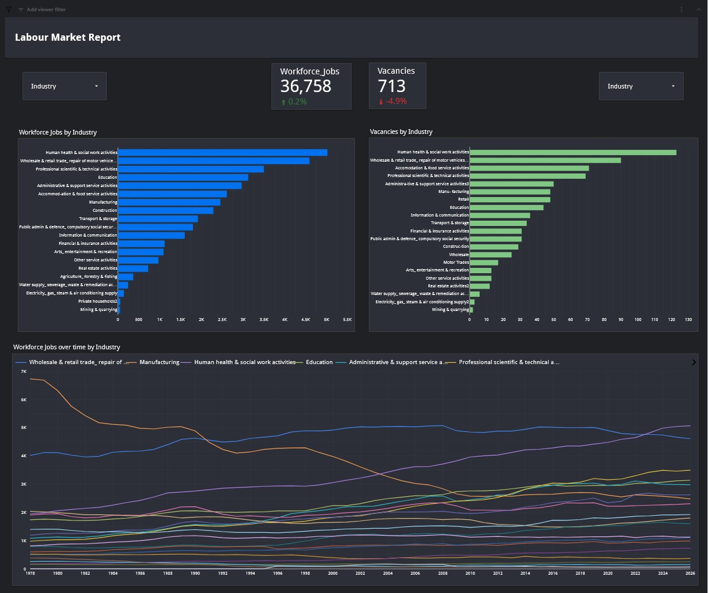

UK Labour Market Analysis
SQL | Google BigQuery | Looker Studio
Project Overview
This project explores trends in the UK labour market using publicly available data from the Office for National Statistics (ONS). The analysis focuses on employment and unemployment across different age groups, workforce jobs by industry, and the relationship between job vacancies and unemployment.
The aim was to investigate how labour market conditions have changed over time (which is particularly relevant now), whilst further developing my skills in SQL, data preparation, exploratory analysis and interactive dashboard development.
The majority of the project was spent cleaning, exploring the data and answering research questions (can be found in the GitHub repository), the dashboard was the final product that was available to be created due to the previous work. My next project will most likely involve an example dataset so I can focus on dashboard creation.

The image above displays one of the three pages included in the interactive Looker Studio dashboard.
Tools & Data Sources
- SQL: Data cleaning, transformation and analysis.
- Google BigQuery: Data storage and querying.
- Looker Studio: Interactive dashboard development.
The data sources and cleaned tables can be found in the GitHub repository.
Data Cleaning & Preparation
The datasets required cleaning and transformation before they could be used for analysis. Using SQL in BigQuery, I converted dates into a consistent format, restructured tables, prepared industry and age-group categories, and combined relevant data for comparison.
Analysis & Visualisation
I developed an interactive Looker Studio dashboard consisting of three pages, each focusing on a different aspect of the UK labour market.
Employment by Age
Examines employment and unemployment trends across different age groups, allowing comparisons of how labour market participation has changed over time.
Industry Analysis
Explores the distribution and changes in workforce jobs across UK industries, alongside industry-level vacancy trends.
Vacancies & Unemployment
Investigates the relationship between job vacancies and unemployment, helping to illustrate changes in labour market conditions over time.
Key Findings
There are 3 main time periods which show significant outliers, 2009-2012, 2019-2022 (COVID-19 Pandemic) and most recently 2026.
2009-2012 experienced the worst labour market in recored history, with there being nearly 6 unemployed people per vacancy in September 2011.
In 2019-2023 during and after the pandemic experienced one of the worst labour markets and in the healing of the pandemic actually experienced the healthiest of recorded time, with their being a 1 to 1 relationship between vacancies and unemployed people (unemployment is defined as people trying to find work, so it is possible that a number of people were not ready to go back to work yet, thus creating the healthy looking statistics).
2026 is currently reading statistics that are nearly as bad as the worst part of the COVID-19 Pandemic, with 2.5 unemployed people per vacancy, compared to the peak of COVID being 2.9 in 2020.